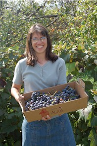

The Farm Shop

The Sunny Acres Farmshop aims to offer the highest quality fresh produce. You can pick your own or buy it in our shop. Set amidst acres of outstanding natural beauty on the beautiful rolling hills northeast of Council Bluffs, the Farm Shop is easily reached on Highway G, with easy access from Interstate 80.
The Farm Shop was established over 25 years ago with great success. Our products have won numerous awards at local festivals and fairs. We also cater to local supermarkets in the Council Bluffs/Omaha area. Look for our products every Saturday morning from May to October at the Council Bluffs Farmers' Market.
Hours
- Monday - Friday: 9 am - 5 pm
- Saturday: 9 am - 3 pm
- Pick Your Own Produce is available from May 15 - October 22
- The Farm Shop is open year-round
Products
- Freshly baked breads and quiches
- High quality meats
- Cheese and other dairy products
- Freshly-picked fruits and vegetables (in season)
- Canned goods and preserves